I'm Albert, an undergraduate studying ECE at Cornell. This is my
website for MAE 4190, Fast Robots. My experience with robotics consists of working with agricultural
robots in a research lab and
my project team, where we are working on a robotic sailboat. I am excited to learn more about the
field of robotics and how to apply it to real-world problems.
Lab 1A
In this lab, we will be setting up our Artemis Nano board to be able to communicate
with the board through BLE. This will set us up for future labs to be able to communicate with the
robot through our computer.
Prelab
We first download the Arduino IDE along with the Sparkful Apollo3 board manager. This allows
us
to program our
Artemis board!
Blink
Blink an LED onboard the Artemis board!
Serial
We then check the serial communication between our board and the serial monitor. We can see
messages being echoed back when
we communnicate through the serial monitor. This allows us to print debug statements as well
as
read critical information of the board.
Read Temperature Sensor
We can read the temperature sensor onboard the board by performing an analog read. Running
the example,
we get the following output:
The temperature sensor is connected to an onboard ADC which allows it to convert analog
readings
to digital values. This is then printed to the serial monitor for us to read.
Microphone Output
By playing keys on a piano, we can change the maximum frequency read by the onboard
microphone. We can see the output change as we play different notes. This illustrates the
pulse density microphone on
the Artemis board which converts the analog signal to binary with an FFT computation.
Lab 1B
In part B of this lab, we configure the BLE communication between our Artemis board and our computer.
This allows
us to send commands and receive data through Bluetooth.
Prelab
Before running commands, we need to setup our environment to be able to connect to the
Artemis. We start by installing a virtual environment for Python with with the following
commands:
Launching our virtual environment gives us the following:
We then connect our Artemis to our computer through BLE. The below shows the advertised
MAC address of the Artemis. After getting the MAC address, we can connect to the Artemis
after
configuring the UIUDs of the Artemis to match on the computer and board. We set all of
the connection
information in the jupyter lab notebook.
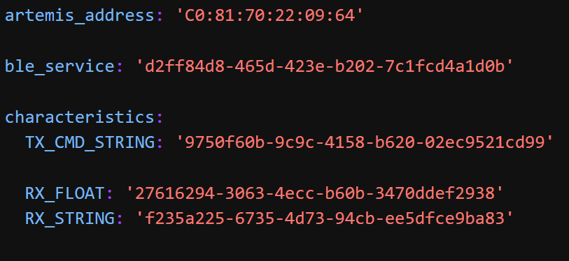
Once all the proper configurations are made, we can finally connect to the Artemis board!
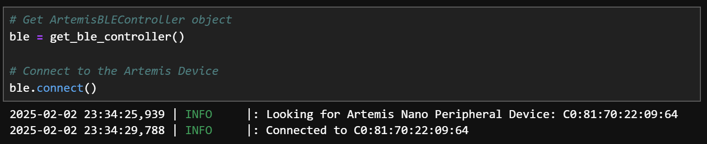
Task 1
Our first task is to simply send a string from our computer to the Artemis by using the ECHO
command. On
the Arduino side, we see the code below. We simple extract the string and append the extra
characters to the end
before sending it back to the computer.
When sending an ECHO request in jupyter lab, we see the return string as following:
Task 2
We implement the SEND_THREE_FLOATS command to extract three floats in the Arduino sketch. The
Arduino code
shown below extracts each float in a list of 3 that are separated by the "|" character. They
are then stored in
variables and printed to the serial monitor.
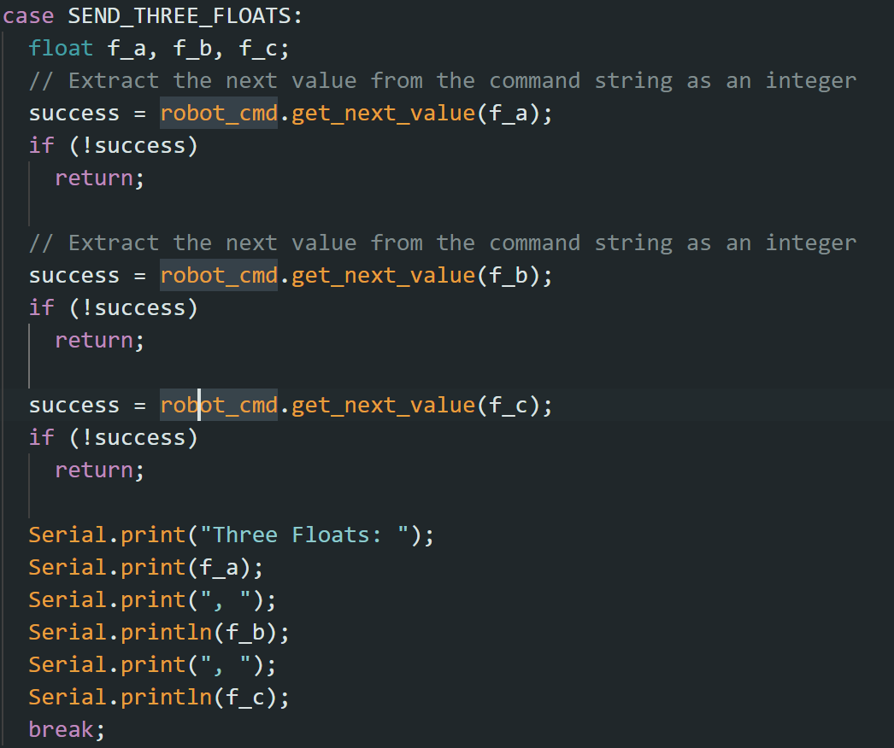
When running the command in jupyter lab, we see the following output on the Arduino side. The
floats
are extracted and printed to the serial monitor.
Task 3
To easier debug in the future, we need to implement a way to receive timing information from
the
board. We implement the GET_TIME_MILLIS command to return the current time in milliseconds
tracked
by the Artemis board. This is sent through BLE to our computer.
The above shows the code on the Arduino side. We create a temporary buffer to store the
string of the
current time in milliseconds. We then send this string through BLE by writing to the
characteristic. The
output on the computer side is shown below:
Task 4
After implementing the GET_TIME_MILLIS command, we implement a notification handler. This
allows our computer to automatically parse
the data sent from the Artemis board. We implement a simple notification handler that prints
timing data with the code shown below:
In the above, we see that when sending the GET_TIME_MILLIS command, we can see the timestamp
is printed right when the board sends back the data.
Task 5
To determine how fast timestamp messages can be sent, we will implement a loop that
continuously sends timestamps
in Arduino to our computer.
We read this output in jupyter lab. By reading the amount of sent timestamps for 5 seconds
of messages, we can calculate the amount
of messages sent per second.
We can see that the timestamps are sent at a rate of 44.8 messages per second.
Task 6
Here, we implement a command that will generate an array of timestamps before sending the
entire array. We do this by looping
over a predefined array size and populating the array with the proper timestamps. The
datapoints are then looped over and sent
to the computer.
On the python side, we implement a notification handler that will store each datapoint in an
array. We can find that the
amount of data points sent matches the amount of datapoints on the Arduino side meaning all
data is sent correctly.
Task 7
We also want to receive temperature readings from the board. Here we implement a command
that sends an array of
temperature readings along with an array of corresponding timestamps. The below shows the
Arduino code
which generates 2 arrays, one of timestamps and one of temperature readings in Fahrenheit.
We then send these arrays to the computer
through BLE by sending the temp and time values separated by a "|".
On the python side, we use a similar notification handler that will store each datapoint in
an array. We parse each string received by the
separator "|" and store the values in their respective arrays. By printing the arrays, we
can see the timestamps and corresponsing temperature values.
Task 8: Discussion
Comparing the two methods of sending data, the first being sending data live as it is
recorded and the second is storing the data and sending it all at once.
While in the first method we are able to get real time information, the sampling rate is
limited by the amount of data that can be sent over BLE. In the second method,
we are able to sample data at a faster rate however cannot send data in real time. In this
method, we can record data as quickly as the sensor can sample then send the entire
array at once. In that require real time data and debugging, the first method is preferred.
However, if we are looking for high sample sizes with lots of resolution, method 2 is
preferred.
Given the Artemis has 384kB of RAM and unsigned longs take 4 bytes of space, we are able to
store 96000 datapoints. In the case of storing temperature and time readings,
we can store a total of 48000 sample points.
This lab was a great introduction to the Artemis board and how to communicate with it. In
addition,
I became familiar with the BLE communication and the general debugging process with the
Artemis.
Understanding how to use the serial monitor will be a good skill when debugging in the
future.
Lab 2
In this lab, we will setup the IMU and connect it to our Artemis board via I2C. We will then
implement
chart the data from the IMU and configure all of the sensors onboard. Once configured, we experiment
with various filtering techniques to improve the data quality.
Setup the IMU
Before coding up this lab, we need to setup our IMU. We begin by installing the SparkFun 9DOF
IMU
Arduino library. This allows us to easily interface with the IMU and get readings. We then
run
the basic example
program. In the program we notice the AD0 pin setting. According to the datasheet, this
allows
us to control the I2C address of
our IMU. We use a setting of 0 for our IMU. We see that with the basic example code we see
the IMU data being printed to the serial monitor, confirming that our setup is correct.
Accelerometer
With our table as a guide, we can see the accelerometer readings at -90, 90 and 0, 0 (pitch,
roll). We
utilize the Arduino serial plotter to find the following graphs.
IMU at -90, 90 degrees
IMU at 0, 0 degrees
We can also calibrate out some noise by doing a two point conversion. This will help reduce
the offset and scale errors in the accelerometer readings, providing more accurate data for
our measurements and experiments. By taking the roll values at two endpoints, we can compare
our sensor to an ideal accelerometer
Roll at -90 and 90 (Ideal: Purple, Real: Green)
While this offset may be due to tilting of the table or edge, we can still find the
conversion factor between the two to be 1 / 0.952 with the formula:
S = (I2 - I1) / (R2 /
R1)
We can now analyze our IMU data in the time and frequency domains. We first try to analyze
the passive noise
from the accelerometer by taking a sample and plotting the data in time and frequency. At a
sampling frequency
of 480 Hz, we can see little noise except for a small spike around 30-40 Hz.
Using a cutoff frequency of 35 Hz, we can compute the value of alpha for a low-pass filter
using the formula:
alpha = cutoff_frequency / (cutoff_frequency + sampling_frequency / 2 * pi).
For a cutoff frequency of 35 Hz and a sampling frequency of 480 Hz, we pick an alpha of
roughly 0.2
Time domain and frequency domain graph of IMU pitch around 0 degrees
Upon analyzing our passive noise, we add some active noise to the system by vibrating our
table. Again we see relatively consistent
amplitudes with a small spike around 30-40 Hz.
Time domain and frequency domain graph of IMU pitch around 0 degrees with
vibration
With the alpha value calculated, we can implement a low-pass filter to reduce the noise in
our data. We use the code below, taking the previous value of pitch and multipling it by
(1 - alpha) and adding the current value of pitch multiplied by alpha.
We can see that the low-pass filter does a good job of reducing the noise in our data when
plotting our
unfiltered and filtered responses on top of each other.
Low-pass filter applied to IMU data compared to unfiltered
Gyroscope
We can compare values from our accelerometer to our gyroscope. While the gyroscope readings
are smoother, they are much more susceptible to drift. This is due to the fact that errors will
accumulate on the gyroscope as it measures angular velocity. The accelerometer on the other hand
will drift less however is more susceptible to noise. We use the following equations to compute
our gyroscope angles for roll and pitch which we can compare to the accelerometer angles.
Roll = Roll + (GyroX * dt)
Pitch = Pitch + (GyroY * dt)
Gyroscope Pitch vs Accelerometer Pitch
Gyroscope Pitch vs Accelerometer Pitch
From the graphs, we can tell that the gyroscope is much more susceptible to drift.
We can also see that the gyroscope is very smooth, comparable to the LPF. It does not
suffer the same spikes as the raw accelerometer data. We are also able to change the sampling
rate of
our IMU to see the effects on the data. We can see that lowering the sampling rate, causes
significant increase in gyroscope drift
and decrease in data smoothness.
Gyroscope Roll vs Accelerometer Roll Low Sample Rate
We can also implement a complementary filter to combine the two sensors. The complementary
filter uses a weighted average of the two sensors to get a more accurate reading. We can
implement this with the following code:
This give us the following graph. We notice that our drift issues are gone, as we are able to
rezero both pitch and roll to a fixed point in the graph. We weigh our filter in favor of the
accelerometer
which means we still have vibrations, however we see less noise than the raw pitch and roll from
accelerometer and this can be fixed by further tuning the weights.
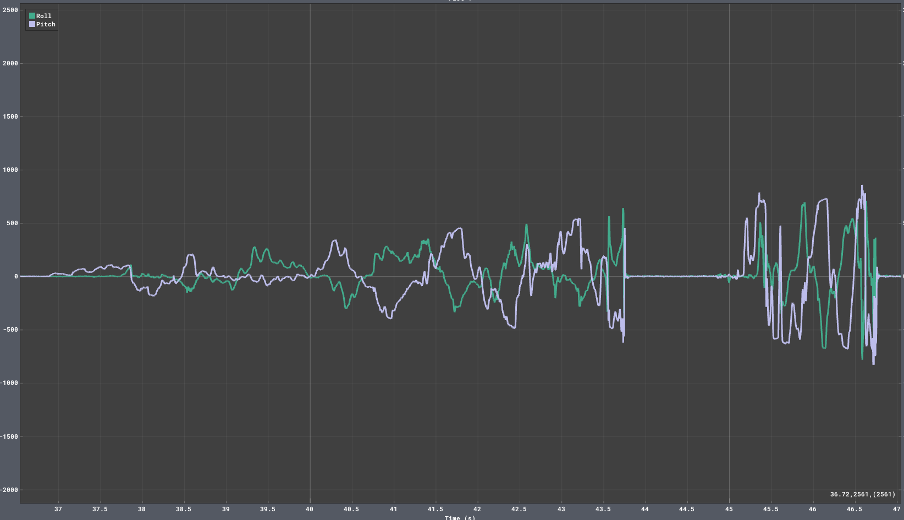
Increasing Sampling Rate
To increase our sampling rate, we remove our IMU checks. While before we would check if IMU data
was
ready, now we simply execute our measurements. We also remove all measurements to the serial
monitor in
our main loop providing the following main loop. In this loop, we simply measure the IMU
data and store it in temporary arrays. These arrays are then sent to the computer after
measurements
have finished.
Over a sample size of 500 datapoints containing complementary roll and pitch along with yaw
from the gyro, we are able to achieve a sampling rate of 233 samples / second. Interestingly,
this
sampling rate is not as high as the IMU sample rate. When looking at the output data, we rarely
see repeat values. This means that the IMU is sampling faster than we can read. In addition, the
datasheet
states that the gyro and accelerometer have a max output datarate of 9khz and 4.5khz
respectively, much
faster than our sample rate.
The following code allows us to record 5 seconds of data and send all of the data from the
Artemis to our
computer. The 3 values we send are the complementary roll and pitch along with the gyro yaw.
We confirm that all the values are being sent correctly by printing the timestamps on our python
side.
We see the time starts at 28922 and ends at 33920, confirming that we are able to record a full
5 seconds of data
Array Storage
A consideration we need to make is how to store our data, whether have one large array or
multiple small
arrays. We decide to choose having separate arrays for each value. This reduces code complexity
as instead
of having to parse each value of the array when sending and reading, we can send values
individually. This
also allows for increased flexibility as we can easily choose to only send a specific set of
values.
Considering the memory of the array, we want to minimize the space our datatypes take. For
timestamps, we
use 4 byte ints in order to store the top end of millisecond values. For pitch, roll and yaw, we
require
floats for floating point precision. These are each 4 bytes. In total, each message takes 16
bytes to store.
Given the artemis has 384kB of RAM, we can store a maximum of 24000 messages. With the
previously calculated
sampling rate of 233 samples / second, we can store a maximum of 103 seconds of data.
Stunt!
Driving the car around is really fun! My stunt includes doing some flips and drifting the car
around.
Lab 3
The purpose of this lab is to setup our ToF sensors onboard the robot. This will be done through I2C
and we will
be able to read the distance from the sensors. We attach to ToF sensors, configure them, and test
them to
ensure they are working properly.
Prelab
Before beginning this lab, we need to install the VL53L1X library through the Arduino
library manager.
Once installed, we must setup the I2C address of the sensors. Looking at the datasheet, we
can see
the default I2C address is 0x52. Because we have 2 sensors, we need to change the I2C
address of one of the sensors.
To change one of the I2C addresses, we can use the XSHUT pin onboard the ToF sensor to
temporary shutdown a sensor. By shutting down
one ToF sensor, we can change the I2C address of the other sensor. Once both sensors
restart, they will have unique addresses.
This is significantly simpler than having to continuosly switch them on and off at runtime,
as the addresses will just remain unique.
Wiring diagram of our Artemis with both ToF
attached. We utilize the multi-qwiic connector
to connect both ToF sensors to the Artemis.
We also must determine where to place the ToF sensors on the robot. We mainly want to detect
for obstacles in the forward
direction so we place a sensor at the front. the second sensor is placed on the right side.
The majority of our turns will
be right turns so having a sensor on the right side will help us detect for obstacles when
turning. We will miss obstacles to our
direct left however this is not a major concern.
Hardware Setup
We begin by wiring up our ToF sensors to our Artemis board. We also need to solder the XSHUT
pin of one of the ToF sensors to the Artemis
We then run the example code I2C code. This will ensure that our Artemis can detect the
sensor over I2C. Interestingly, we see that the detected address is 0x29, which is different
than our default address. This is because the LSB of an I2C address is reserved for the
read/write bit.
By shifting one bit left, the address we see is 0x52, which is the default address of the
ToF sensor.
Testing the Sensor
Our I2C sensor has 3 modes of sensitivity: short, medium and long. We can set the mode by
using the setDistanceMode function.
Long distance is optimized around 4m, medium around 3m and short around 1.3m. For our case,
we will be using the short distance mode as we are operating in smaller environments and
need accurate readings at short distances to
avoid obstacles. The below video shows us testing the ToF sensor and reading the output in
the serial monitor
We want to test the accuracy and precision of our ToF sensor. We can do this by measuring
the distance of a wall
at various distances. We can then compare the output of the ToF sensor to the actual
distance. To make sure our
measurements are precise, we repeat this process 3 times to make sure we are getting
consistent readings.
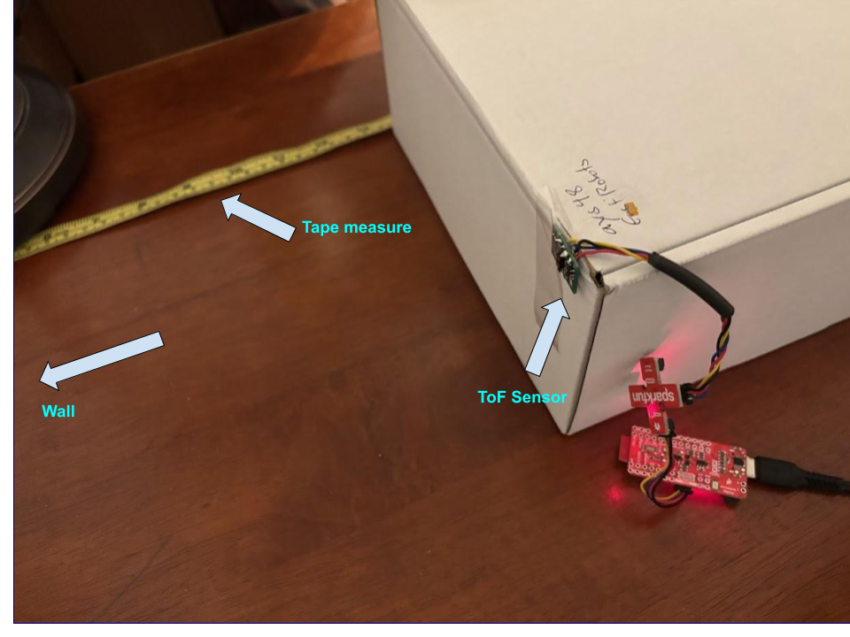
Over 3 trials, we notice we get very consistent readings across 0 - 1.2m, the range
of the short distance operation with an average of 100 samples per sample point. We notice a
slight dropoff
in precision above 1m, where trial 3 and trial 2 skew from linear.
Another experiment we can perform
is to see the impact of ranging time. We can change the ranging time with the function
setTimingBudget.
To test this, we take 100 samples of an object at 10cm with various ranging times and
measure the standard
deviation of the samples. As expected, we notice that higher values of the randing time lead
to more
accurate results as the measured values approach the actual distance. In addition, our
standard deviation
decreases as the ranging time increases.
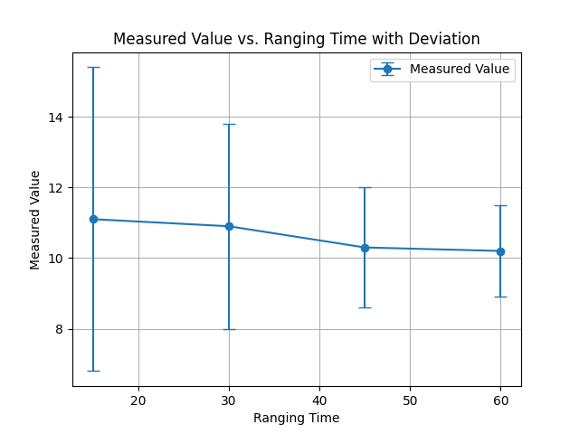
We can now hook up our second ToF sensor. As stated above, we must shut off one ToF
temporarily to
reprogram the other address which we achieve with the code below:
Once the devices have unique addresses, we can read data from them independently as shown in
the
video. We can print the values from each ToF in the same iteration of our main loop without
having to
switch them on and off, as they have unique addresses.
Our next test consists of trialing the maximum speed we can run our code at with the ToF.
We do this by only polling the ToF when both sensors are ready, else we simply
skip the measurement. At each timestep, we print the time it took between the last iteration
of the code. Below we see the code to check the time between iterations along with the trace
of the serial monitor.
Above we see the printed timestamps. We notice that for every 10 iterations, there is one
ToF measurement which takes
15ms. All other iterations take 5ms. This gives us an average loop time of 6ms. The current
limiting factor is the time it takes
to read the ToF sensor, as it is not ready every iteration. Therefore, we must make sure not
to block on the ToF
every iteration as it will slow down our code significantly.
We can now integrate the ToF sensors with our IMU sensor along with our BLE communication
to get a full set of data from our robot. We can then send this data to our computer for
processing. We add
a new command we can send to the robot 'COLLECT_SENSORS', which will return roll, pitch,
yaw, distance from the front ToF and distance from the right ToF.
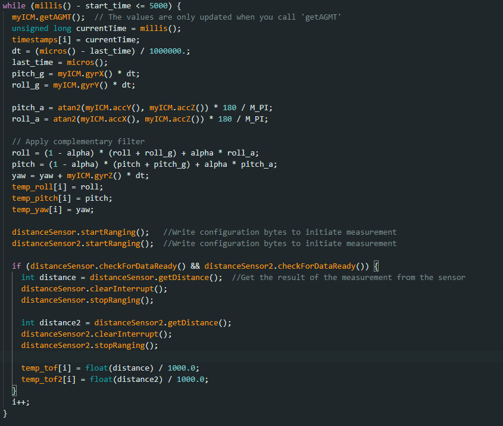
The above snippet shows the data collection loop. We make sure to only poll the ToF when
both sensors are ready
in order to not block the IMU which can poll much faster. This gives us a ToF graph that
only has data available
at certain time stamps:
We collected roll and pitch data at the same time as the ToF. We notice that this data is
continuous
as it does not block on the ToF sensors.
Discussion
Overall, this lab was a great introduction to the ToF sensors. We learned how to configure
the I2C address of the sensors
and how to read data from them. We also integrated all of the sensors into our Artemis
system.
This will be very useful for future labs as now we have a suite of sensors to find our
position and find obstacles.
Lab 4
The purpose of this lab is to be able to drive our robot with open loop control. We connect our
Artemis board to the motor drivers and test the motors with a series of simple commands.
Prelab
In order to drive our motors with enough current, we need to parallel couple the inputs and
outputs of our motor drivers.
This is so we can provide twice the current through one motor driver which prevents
overheating and allows us to drive more current.
We make sure that we are parallel coupling the inputs and outputs from the same motor driver
to avoid timing issues.
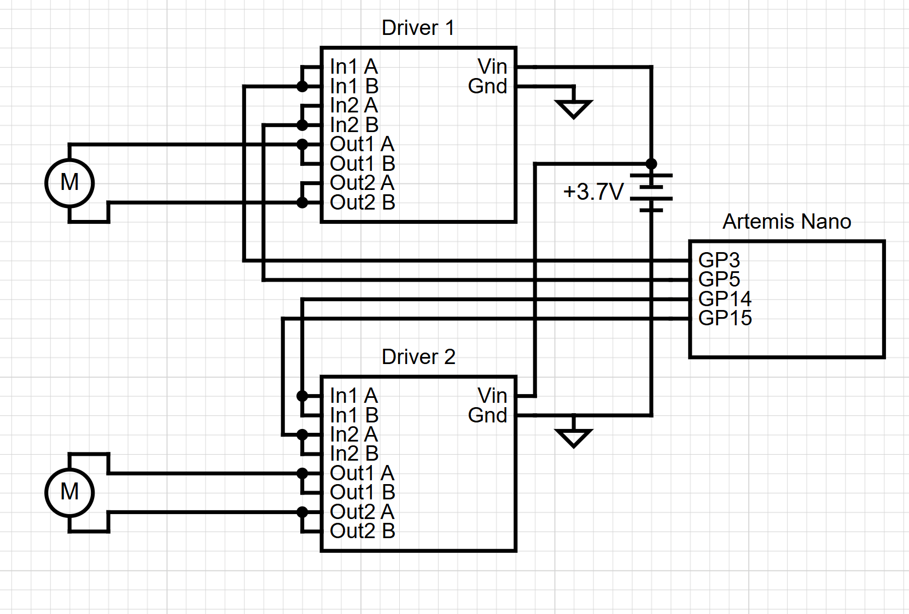
The above diagram shows the wiring of our motor drivers. Both motor drivers are powered from
a 3.7 V battery separate to the
battery powering the Artemis. This allows us to avoid the current draw from the motors
affecting the Artemis, as this may cause
voltage dips which could shut off the Artemis during runtime. We make sure to choose analog
capable pins to drive PWM
signals to the motor drivers. The pins chosen (3, 5, 14, 15) are chosen to be close to the
motor drivers when mounted. We try to
keep the wiring as short as possible to avoid noise and interference, however I made sure
the wires to the motors
were long for easy access.
Basic Wiring and PWM
We begin by wiring up our motor drivers to our Artemis board and hooking everything up
through an external power supply.
We then prove the motor drivers to make sure they can regulate the input voltage with the
PWM from the Artemis. To test this,
I took inspiration for Nila Narayan (2024) and iterated through the range of PWM values. I
repeated this for both motor drivers,
the following video shows the oscilloscope trace of the PWM signal. We choose a power supply
voltage of 3.7V as this is the same
value as our 850 mAh battery.
With this, we can now drive the motors with the PWM signal. Initially, I tried to drive the
motors from the power supply.
I noticed that the motors would stutter significantly despite the current limit being much
higher than needed. I believe this is because the power supply limited the current from
rapidly
switching when using PWM. I then
switched to using the battery and the motors were able to be driven. To drive the motor in
both directions, I utilized the following block
of code. I drove the motors in one direction by writing to one channel before switching to
the other direction.
We drive the motors in different directions by writing to the appropriate channels. We can
see the result in the below
video:
Now that we can drive the motors in both directions, we need to confirm that both motors
function from battery power.
We drive both of the motor controllers independently to make sure we have full
functionality. The below videos
display each side of the robot being driven.
Car Assembly
We can now assemble our car. I wanted to make the multi-qwiic connector as central as
possible as all of the
sensors and Artemis need to be attached to it. I placed it in the center of the car and
assembled the car around it.
I kept the 850mAh battery in the battery compartment but left the 650mAh battery accessible
in case I need to take
out the Artemis. The motor drivers are placed on the sides of the respective motors and I
made sure to keep the ToF
sensors as clear as possible to avoid them detecting wires. The Artemis is placed on the
back for each USB access.
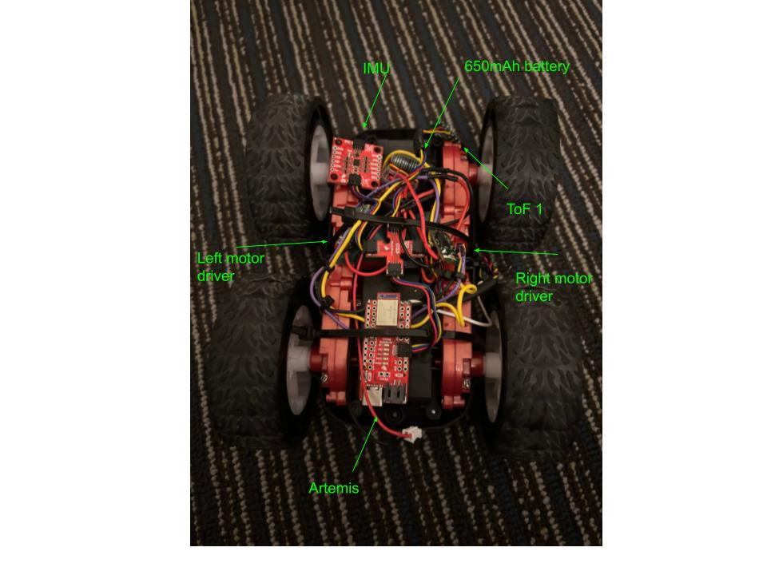
Running the Car
We can now run the car. We start by running the car with both motors at the same speed. We
notice that when trying to
drive the car in a straight line, the car will drift to the right. This can be due to a
number of factors such as the weight distribution of the car,
or mechanical friction differences of each side.
To counter this, we add a calibration constant to our motors. This will scale the speed of
each side to counteract the drift displayed in the
code below.
In our testing, the best value for this constant is around 1.07. We can see the result of
this in the below video. We place a strip of cloth on the ground and see that the car is
able to drive
straight. While this value was found with trial and error, it would likely be better to
determine the value of the constant with a more systematic approach such as measuring the
distance traveled by each side of the car.
PWM Limitations
Another thing we test for is the lower PWM limit. We test for 2 lower limits for PWM, the
first being the minimum PWM value that will overcome static friction. To determine this
value, we simply ramped up
the PWM until the car started moving. In my testing, I found that a PWM value of around 45
was the minimum value that would overcome static friction. Note that my testing was done on
carpet
and I had already been running the car for a while, so the battery was likely at a lower
voltage. The actual value may be lower.
The second lower limit is the PWM value to continue moving after coasting. I determined this
in a similar manner to the first, however I would give the robot a push. Doing so, I found a
PWM value of around 30 was
enough to continue moving after coasting.
Untethered Control
We can now control the car untethered. We implement 5 new commands through BLE:
'DRIVE_FORWARD', 'TURN_R', 'TURN_L',
'FAST_R', 'FAST_L'.
The first command will drive the car forward at a given speed for a given time. The second
and third commands turn
the car for a set period of time in the respective direction. The last two commands are for
fast turns while going
forward. The below video demonstrates control of the car through BLE. This was near the end
of my testing
so the battery was likely at a lower voltage causing small stutters in the movement.
Discussion
Overall, this lab was heavily focused on hardware and wiring. The main challenge I faced was
an issue with one of my motor drivers, which
was shorted when being powered. I determined this as when plugging in the 850mAh battery,
the motor driver would cause the motor to spin.
Initially I thought the Vin and output pins were shorted however after probing with a
multimeter, I detected no short. Interestingly, when
I drove the motor driver with a PWM signal, the PWM signal would dominate the Vin signal and
the motor would follow the PWM value. This allowed
me to continue testing despite the issue.
Lab 5
The purpose of this lab is to be able to drive our robot with basic closed loop control. We implement
a linear
PID controller to drive the robot in a straight line. This is done by checking the ToF sensors and
attempting to drive the robot into a wall and stop just before hitting the wall.
Prelab
We first implement a PID controller command that can be run over BLE. We do this by looping
for a set period of time
and computing the proper PWM value with a function PID, which takes in our current distance
to the wall and a desired setpoint.
The PID function is a simple linear PID controller that computes the error between the
current distance and the setpoint. We then
store the current distance, PID value and timestamp in arrays to later be sent over BLE.
This is done after we stop driving the motors
in order to avoid delays in the loop.
while (millis() - start_time < time_run) {
if (distanceSensor.checkForDataReady()) {
distance = distanceSensor.getDistance(); //Get the result of the measurement from the sensor
distanceSensor.clearInterrupt();
distanceSensor.stopRanging();
distanceSensor.startRanging(); //Write configuration bytes to initiate measurement
}
curr_pwm = PID(distance, 300);
if (i < max_arr) {
tof_ranges[i] = distance;
pid_values[i] = curr_pwm;
timestamps[i] = millis();
}
i++;
}
We implement another command in order to easily tune the PID controller over BLE. This
command takes in 3 values, the P, I and D values sent from our computer.
We then set the PID controller to these values allowing us to tune much faster
float f_a, f_b, f_c;
// Extract the next value from the command string as an integer
success = robot_cmd.get_next_value(f_a);
if (!success)
return;
// Extract the next value from the command string as an integer
success = robot_cmd.get_next_value(f_b);
if (!success)
return;
success = robot_cmd.get_next_value(f_c);
if (!success)
return;
kP = f_a;
kI = f_b;
kD = f_c;
On the python side, we utilize the notification handler from before to receive the data from
the robot. To send the new commands, we
simply have to extend our command list to inclde the new enum values and send the commands
in the same manner as before.
P Control
We first test the P control of the robot. We set the I and D values to 0 and only tune the P
value. We set the setpoint to 300mm(1ft) and
drive the robot forward. We can see the result of this in the below video. Initially, I set
the P gain too high at 0.13 as this would net 255 PWM at 2m. The robot overshot
significantly
before stalling. I lowered my initial P gain to be around 0.09 and I would begin the robot
around 2000mm from the wall, which would
net a PWM of 180.
With just P, we overshoot our setpoint by around 100mm as seen in the below graph. This is
expected as we are not outputting enough PWM once we are close to the setpoint.
PI Control
To mitigate this, we add an I term to our PID controller. This will help us compensate for
steady state error. In addition to the I term, we
also normalize our PWM to be within the range 40 - 255. This sets our lower bound to be the
minimum PWM value that will overcome static friction found
in lab 4. For our I term, the rate variable corresponds to the time between each iteration
of the loop which I measured to be 1.3ms. At 2m, an I of .001 would
integrate at around 2 PWM per iteration which I deemed to be a good starting point. With the
integral and a normalized
PWM, we get a more aggressive response from the robot.
int PID(float curr, float setpoint) {
err = curr - setpoint;
integral += err * rate; // Accumulate the integral term
// Compute PID Output
pwm = kP * abs(err) + kI * integral;
// Normalize PWM output
int normalized_pwm = map(pwm, 0, 255, 35, 255);
if (normalized_pwm > 200) normalized_pwm = 200;
// Drive motors based on error sign
if (err < 0) {
drive(normalized_pwm, normalized_pwm);
} else {
back(normalized_pwm, normalized_pwm);
}
return normalized_pwm;
}
After some tuning, With the I term and normalized PWM values, we stop nearly instantly at
the setpoint. This was with a P gain of 0.07 and integral of 0.0005.
We can see the result of this in the below graph. We notice that we are able to stop within
10mm of the setpoint.
Interpolation
Due to the slow speed of the ToF measures, we see our PID loop is only able to compute a new
value when the ToF samples depite the
two operations being decoupled. To mitigate this, we can linearly interpolate between the
last two ToF samples to get an estimate
distance despite not having a measure. We utilize the following code, which calculates thes
slope between the last two samples and if
there is not new data, we estimate the distance based on the slope.
while (millis() - start_time < time_run) {
new_data = false;
if (distanceSensor.checkForDataReady()) {
new_data = true;
distance = distanceSensor.getDistance(); // Get the result of the measurement from the sensor
distanceSensor.clearInterrupt();
distanceSensor.stopRanging();
slope = (float)(distance - last_dist) / (float)(millis() - prev_measure_time);
last_dist = distance;
prev_measure_time = millis();
distanceSensor.startRanging(); // Write configuration bytes to initiate measurement
}
if(!new_data)
{
distance = distance + slope * dt;
}
// Serial.println(distance);
curr_pwm = PID(distance, 300);
// dt = millis() - prev_time;
// prev_time = millis();
if (i < max_arr) {
tof_ranges[i] = distance;
pid_values[i] = curr_pwm;
timestamps[i] = millis();
}
dt = millis() - prev_time;
prev_time = millis();
i++;
}
When running with just P control value of 0.09, we see that the system is much more
responsive than before and the graph is much smoother. The smoother
graph causes the robot to change the PWM more frequently leading to a more responsive
system. This was surprising to me as I was slightly more
responsiveness however not significantly. I believe this trial was affected by me charging
the battery beforehand.
PID Control
Naturally, we now want to increase the speed of the robot. To do this, I added a D term to
have more control over the loop.
When implementing the D term, I made sure to add a LPF to the derivative term in order to
prevent noise.
int PID(float curr, float setpoint) {
err = curr - setpoint;
integral += err * rate; // Accumulate the integral term
// **Derivative Term with Low-Pass Filter**
float raw_derivative = (err - prev_err) / rate;
derivative = d_filter_alpha * raw_derivative + (1 - d_filter_alpha) * prev_derivative; // LPF applied
// Compute PID Output
pwm = kP * abs(err) + kI * integral + kD * derivative;
// Normalize PWM output
int normalized_pwm = map(pwm, 0, 255, 35, 255);
if (normalized_pwm > 200) normalized_pwm = 200;
// Drive motors based on error sign
if (err < 0) {
drive(normalized_pwm, normalized_pwm);
} else {
back(normalized_pwm, normalized_pwm);
}
// Store previous values for next iteration
prev_err = err;
prev_derivative = derivative;
return normalized_pwm;
}
Despite having PID control, I found my best results were with just P and I control. I
attempted to use a heuristic procedure to tune the system
by increasing kp until oscillation then decreasing by a factor of 2-4, repeating with ki and
then using kd to respond to disturbances. I found I had best
results when removing the kd term. I believe I need to do further work on implementing kd
such as tuning the LPF alpha value. I noticed some stuttering with kd
which I believe to be due to noise. While not particularly fast, my smoothest results
occured with kp = 0.04 and ki = 0.0005
as shown in the video below (while suffering from a bit of overshoot, the
system was able to recover fast. I would likely be able to improve by handling integrator
windup):
Speed and Sample Rate
With all of the PID functions implemented, we now can determine our sample rate. By
measuring the amount of timestamps over a period of 6 seconds,
we can determine the sample rate of our PID loop.
We can see that our PID loop is running at around 335 Hz. This gives us a new PID
calculation every 3ms. Since the ToF is decoupled, we also
measure its sample time as well. By counting the amount of times we get a new ToF sample
over 6 seconds, we find the ToF to sample once
every 100ms. The default sample rate of the ToF is around this value as it takes 100ms to
sample and has 100ms between measurements. While this could
be sped up by changing the ranging time and time between measurements, I left these values
at default as I was able to get stable values when interpolating between samples. In terms
of car speed,
we measure our max speed to be around 0.88m/s from the graph.
Lab 6
The previous lab allowed us to control the robot in a straight line using PID control. This lab will
allow us to control
the orientation of the robot using PID control. To do this, we utilize the IMU onboard our robot to
estimate our yaw.
Prelab
We change our bluetooth setup in this lab to be able to process bluetooth commands on the
fly. This means we want to be able to change the setpoint
while the controller is running as well as the PID gains on the fly. To do this, I changed
the design of my code where instead of running
the PID loop when triggered by a command, I run the PID loop in the main loop. I then
utilize various commands to change global variables such as
setpoint and PID values as well as start and stop recording data. We maintain the below main
loop which has various flags such as 'recording', which
begins collecting data. In the future, I can add more flags that can be set by commands to
change the behavior of the robot.
while (central.connected()) {
poll_dmt();
curr_pwm = PID_Turn(yaw, setpoint);
if(recording && i < max_arr)
{
timestamps[i] = millis();
pid_values[i] = curr_pwm;
yaw_arr[i] = yaw;
i++;
}
else if(i >= max_arr)
{
i = 0;
recording = false;
}
// Send data
write_data();
// Read data
read_data();
}
We implemented the following set of commands for this lab: START_RECORD, CHANGE_SETPOINT,
SEND_BACK, TUNE_PID.
START_RECORD will begin recording data to be sent over BLE. CHANGE_SETPOINT will change the
setpoint of the PID controller. SEND_BACK will send back the data recorded by the robot.
TUNE_PID will change the PID values of the controller.
On the python end, we are able to send commands on the fly as shown below. This is much
faster to tune the PID controller as I can rapidly see the changes on the robot.
we utilize the notification handler from before to receive the data from
the robot. We are able to
parse the values sent from the robot into 3 arrays which we can then use to plot using
matplotlib. This allowed me to tune
the PID controller graphically and see the results of my tuning.
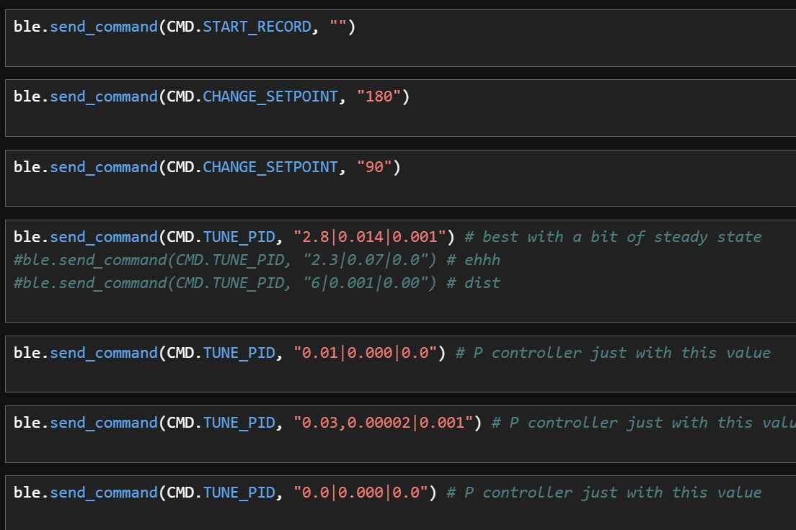
The workflow this lab was as follows: Start recording, set my PID values, set my setpoint,
then send back my recording
Getting Yaw
Initially I simply integrated my gyroscope values in order to estimate the yaw of the robot.
A consequence of this was
I noticed significant drift from my IMU. While I tried offsetting this with a constant
linear offset, I would still notice drift
over time and if I turned the robot significantly with PID control, this would only get
worse. Instead, I chose to utilize DMP to obtain yaw values of my robot.
Thank you to Stephan Wagner (2024) for providing a useful guide to setting up DMP. DMP fuses
all of the sensors onboard the IMU in order to return accurate estimates of the yaw that
suffers from little drift.
Looking at the datasheet, we find that DMP runs at 1.1khz. We can further specify the output
data rate with myICM.setDMPODRrate, where we set the ODR to the maximum of
1.1khz (same as DMP rate). Looking at our gyroscope, it has a programmable range between 250
to 2000 degrees per second. This can be changed by editing the GYRO_CONFIG register
however DMP sets the gyro to max by default which is more than enough sensitivity for our
use case. Something we need to watch out for with DMT is avoiding filling up the FIFO, which
will cause
crashes. To do this, we constantly poll the DMT in our main loop.
enable_dmt();
// While central is connected
while (central.connected()) {
poll_dmt();
// Send data
write_data();
// Read data
read_data();
}
P Control
We are able to obtain fairly good results with just a P term. The below video shows a
controller with only a P term of 3.4. For this part, I returned to the old code structure
which
only runs the PID loop when triggered by a command. This is because I wanted to be able to
have a more
controlled testing environment where I could set up the robot consistently each time and
tune:
As we can see in the video, the controller initially is able to quickly turn to the setpoint
however only a P controller
struggles near the setpoint and has a lot of steady state error. The below graph shows a
setpoint of 30 degrees:
A fun thing we can do with just P control is to continuously run our P controller and push
the robot around.
We can see that the robot is able to maintain its orientation despite being pushed around.
PID Control
For this lab I implemented full PID control. Initially I planned on using PI however after
seeing how quickly the robot turned with
sole P control, I decided it would be best to add a derivative term to dampen out
significant changes in slope. I made sure to include a LPF after looking at the raw DMT
graph. While
the graph looks smooth from afar, I wanted to avoid the derivative term jumping from the
small bumps in the curve.
I chose a fairly high alpha of 0.7 as there were not significant bumps in the graph.
The below displays our PID controller. One thing we need to do is to handle wraparound of
the error, where our yaw value can be
between 0 and 360. We don't want to have a large error when the robot is facing the opposite
direction. To do this, we use the fmod function to wrap the error
around 360 degrees. We then subtract 180 to get the error between -180 and 180 degrees.
Similar to lab 5, we
normalize our pwm between 35 and 255 to avoid stalling the motors. To avoid derivative kick,
I changed the derivative term to be
derivative of the yaw (process variable) rather than error. This means that upon changing
setpoints, we will not experience massive kick.
int PID_Turn(float curr, float setpoint) {
// Compute angular error with wraparound handling
float err = fmodf(setpoint - curr + 540.0, 360.0) - 180.0;
integral += err * rate; // Accumulate the integral term
// **Derivative Term with Low-Pass Filter**
float raw_derivative = (yaw - prev_yaw) / rate;
derivative = d_filter_alpha * raw_derivative + (1 - d_filter_alpha) * prev_derivative; // LPF applied
// Compute PID Output
//pwm = kP * abs(err) + kI * integral + kD * derivative;
pwm = kP * err + kI * integral + kD * derivative;
// Normalize PWM output
int normalized_pwm;
if (pwm < 0) {
if (pwm < -255) {
pwm = -255;
}
normalized_pwm = map(pwm, -255, 0, -255, -35);
} else {
if (pwm > 255) {
pwm = 255;
}
normalized_pwm = map(pwm, 0, 255, 35, 255);
}
diff_drive(normalized_pwm, -normalized_pwm);
// Store previous values for next iteration
prev_yaw = yaw;
prev_derivative = derivative;
return normalized_pwm;
}
After tuning the PID values following the heuristic procedure, I found that I had best
results with a P value of 2.8, I value of 0.014 and D value of 0.001. Giving
us little steady state error as shown below (setpoint is 30 degrees):
On the fly setpoint changes
The below video shows us changing the setpoint on the fly to make sure we don't suffer from
derivative kick. While we don't see much kick from the graph,
we unfortunately do not hit our setpoints accurately. This could be resolved with more
tuning however this was late into my testing and my
battery had lost charge. Looking at the graph, I believe I could have benefited from a
higher
derivative to reduce the amount of kick that the P term gives. In addition, I likely should
have reduced my
proportional term to reduce the amount of overshoot. I also believe that it may be
beneficial to reset
the integral term when changing setpoints to avoid integrator windup.
Discussion
This lab was a great exercise in implementing PID control for orientation. The use of DMP
for yaw estimation significantly improved the accuracy and reduced drift compared to
integrating raw gyroscope data. The ability to tune PID parameters on the fly and change
setpoints dynamically made the process much more efficient and allowed for rapid testing and
iteration.
One challenge I faced was the surface I was testing on. Initially, I was testing on a carpet
which
made it extremely difficult to get consistent values as the differential drive could not
turn. I then switched to
glass which was easier to turn on however I believe I would have benefited from a more
slippery surface which would allow
the robot to skid easier as it turned.
Lab 7
Lab 7 has us implement a Kalman filter on the ToF data. This allows us to estimate the distance of
the wall
more accurately, allowing us to execute at a faster rate. We accomplish this by first estimating a
model
for our robot and testing in python. Once we have tuned a filter, we then plug it onto the robot.
Task 1. Estimate Drag and Momentum
The first task is to estimate the drag and momentum of the robot. We can accomplish this by
taking the step response
of the robot. First, we need to chose a step response u(t) that is within 50% - 100% of our
max PWM. I chose to use
135, which is around 50% of the max PWM. We then run the robot and measure the ToF until we
have reached steady state velocity.
The above graph shows the results of our step response. Unfortunately, our computed velocity
is very noisy. To get a better estimate,
I manually found the slope when the ToF became linear. We can then use the data to estimate
the drag and momentum of the robot. To get these values, we utilize the following equations.
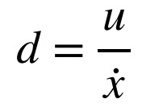
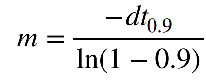
With a step response of 135, we obtain the following constants:
Steady State Velocity: 2190 mm/s
Steady State Time: 0.6s
90% Rise Time: 0.54
Plugging these values into Python we obtain the following values for drag and momentum:
Task 2. Initialize KF (Python)
Our first task is to find our A and B matrices for the Kalman filter. By using the A and B
matrices from lecture,
we are able to plug in the values we have found. Because our ToF ranges every 54ms, we chose
Delta_t of 0.054s.
Delta_t = 0.054 # ToF ranging occurs every 54ms
n = 2 # 2 dim
# A and B matrices
A = np.array([[0,1],[0,-d/m]])
B = np.array([[0],[1/m]])
Ad = np.eye(n) + Delta_t * A #n is the dimension of your state space
Bd = Delta_t * B
This allows us to obtain the following A and B matrices:
We can then determine our C matrix and state matrix. Because we are only measuring distanec
to the wall,
we set the C matrix as [-1,0] (since we measure the negative distance to the wall). We then
start the
state matrix at our initial distance from the wall.
With our matrices, we then need to characterize our noise. For our sigma_3 (measurement
noise) we utilize our
data from lab 3 which is a standard deviation of 15mm. For our sigma_1 and sigma_2 (process
noise), we can use the formula to
estimate from lecture:
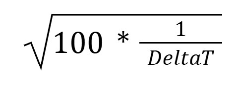
This gives us the following values for our noise matrices:
Task 3. Implement Kalman Filter in Jupyter
With our matrices, we can now implement the Kalman filter in Python. The below code shows
the implementation of the Kalman filter:
By looping through our real ToF data, we are able to call the Kalman filter function to get
a estimate. We first normalize our PWM by 135 to normalize our step response. We also need
to set
an initial covariance matrix and state. Our initial covariance is set to 225, the same as
our measurement
uncertainty and our initial state is our first ToF measure.
pwms = np.array(pwm_f) / 135.0
sig = np.array([[225, 0], [0, 225]])
x = np.array([[-tof_f[0]], [0]])
kf_data = []
for pwm, tof in zip(pwms, tof_f_filtered):
x, sig = kf(x, sig, [[pwm]], [[-tof]])
kf_data.append(x)
With our initial noise values, we are able to get the following KF curve:
To have a closer fit, we drop the measurement noise sigma down to 15:
For our best fit to smooth out some more noise, we increase our process noise up to 65mm.
This gives us our most
balanced fit, filtering out some of the noise while being responsive to new measurement
data.
Task 4. Implement Kalman Filter on Robot
With our Kalman filter tuned, we can now implement it on the robot in Arduino. By utilizing
the
linear algebra library, we are able to perform matrix operations for our filter algorithm.
The below code shows the
implementation of the Kalman filter:
void kf(BLA::Matrix& mu, BLA::Matrix& sigma, BLA::Matrix<1, 1> u, BLA::Matrix y) {
// Prediction step
BLA::Matrix mu_p = A * mu + B * u;
BLA::Matrix sigma_p = A * sigma * (~A) + sig_u;
// Kalman gain computation
BLA::Matrix sigma_m = C * sigma_p * (~C) + sig_z;
Invert(sigma_m);
BLA::Matrix K = sigma_p * (~C) * sigma_m;
// Correction step
BLA::Matrix y_m = y - C * mu_p;
mu = mu_p + K * y_m;
sigma = (iden - K * C) * sigma_p;
}
To run the filter in real time, we need to constantly feed in new ToF data. Because the ToF
data only updates
every 54ms, we are often passing in the same measurements. This led to the filter looking
following a bit more
of a stepped curve. We are able to run the following code every loop to computer new KF
values for our PID control where
kf_error is our computed distane and distance is our ToF value:
We still see that the data is stepped as we pass in measured data when we are not supposed
to.
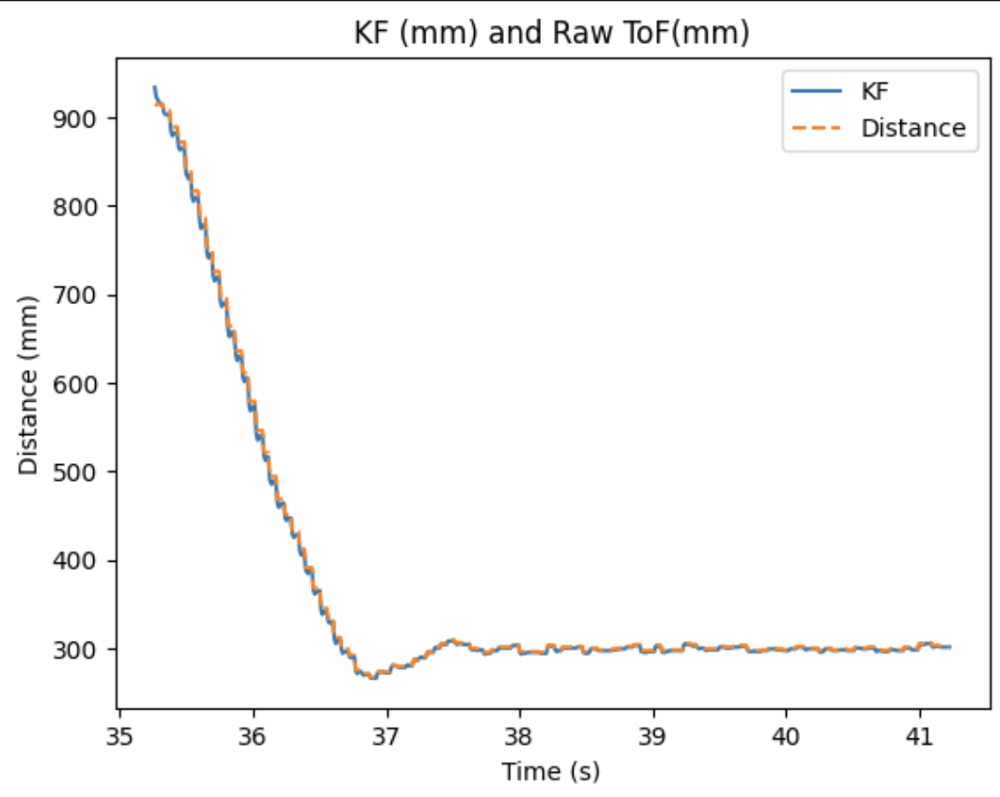
I realized that I made a mistake where I called the KF every iteration of the control loop. This meant that
the KF would be ran even if I did not have new ToF measurement. I then changed the code to only run the KF when I had a new ToF measurement. This netted the
below graph. This however
was still stepped as my ToF sensor was still returning identical values on seperate iterations but this was not
an issue with the filter.
Discussion
This lab was a great exercise in implementing the Kalman Filter. Unfortunately, I was unable
to remove much of the stepped behavior on the real robot. This is because the ToF
kept returning the last measured value. I believe that I could have fixed this by manually
checking
if the ToF value was identical to the last value or increasing the ToF intermeasurement
rate.
For the stunts lab,
I plan to return to using linear interpolation to speed up the data as I believe this will
be a simpler setup.
Lab 8
This lab, we do stunts with the robot! The stunt I chose to perform was the flip, as I believed that
this was better suited for my robot.
I had put the ToF on the heavier side of the robot which would help with the flip.
Implementing the flip in code
In order to perform a flip, I needed to implement a new command in code. First I removed my PID
controller
as we do not want to drop speed into the flip. Initially, I utilized the
braking functionality to try and flip.
In code, I would drive forward until my distance to the wall brok a certain threshold. I then brake
for a certain amount of time, then reverse for the
same amount of time it took to drive to the wall. With my intial code, I was unable to flip the
robot as I believed I was not switching
directions fast enough.
case FLIP_DRIVE:
{
start_time = millis();
while(distance < DISTANCE_THRESHOLD){
// Check and interpolate distance, drive forward
}
brake();
delay(300);
time_to_drive = millis() - start_time + 100; // Time it took to drive forward, it will be slightly longer back due to the flip
start_time = millis();
while(millis() - start_time < time_to_drive)
{
back(255,255);
}
}
To compensate, I changed a couple things in hardware and software. First, I moved the position of
the Artemis battery. Initially, it was in the back of
the robot however I moved it to be in the battery compartment. This shifted the weight distribution
forward causing the robot to be more unstable.
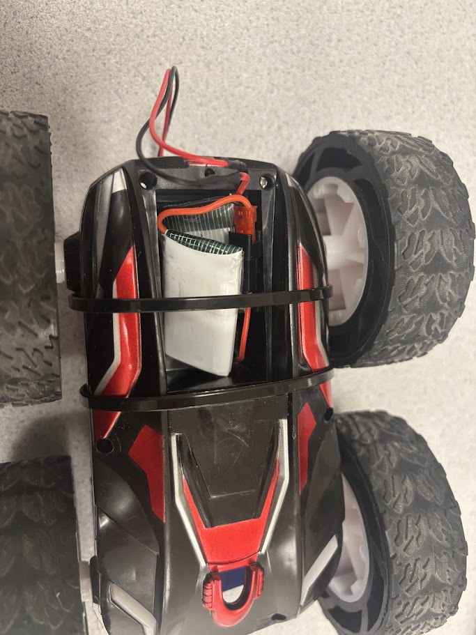
I also changed the code to use a different drive method. Instead of running the motors in the fast
decay mode (coast), I switched to using the slow decay mode (brake). This allowed me to stop the
motors much quicker and switch directions faster.
In addition, the robot would not coast as much after I stopped the motors.
These changes still would not allow me to flip however. I then changed the code to instantly switch
directions
rather than braking the motors. In this implementation, I would drive forward at max PWM then
instantly switch to reverse at max PWM. This allowed me to get the robot to flip.
Note that I set the distance threshold to be 900mm. This is because the sticky mat I was flipping on
began around 800mm from the wall and I wanted to add a bit of extra room.
case FLIP_DRIVE:
{
start_time = millis();
while(distance < DISTANCE_THRESHOLD){
// Check and interpolate distance, drive forward
}
time_to_drive = millis() - start_time + 100; // Time it took to drive forward, it will be slightly longer back due to the flip
start_time = millis();
while(millis() - start_time < time_to_drive)
{
back(255,255);
}
}
Successful Runs
The below videos show successful runs of the flip on the sticky mat.
The below shows the interpolated ToF and outputted PWM values. I used linear interpolation to update
my distance rather than the KF
as I believed that this would allow me to avoid issues with tuning. Note that after flip, I cut the
ToF sensor because
the robot had flipped and was no longer facing the wall. The PWM values outputted also are negated
as the robot must change direction.
Blooper
I had a lot of crashes while testing the flip but this was a run where I accidentally inverted the
motors
after switching to slow decay mode. Chaos ensued after the cut.
Discussion
This lab was a lot of fun to implement the stunts on the robot. I did note that the robot would
sometimes flip
off at an angle. I believe this is due to the motor imbalances. I had previously calibrated these
imbalances however I removed
this calibration to be able to run the motors at max PWM for this lab.
Lab 9
In this lab, we will map our a static room using the ToF sensor. We will use this map in future labs for localization and navigation.
To accomplish this, we place the robot in multiple positions and perform a 'scan' of the room by rotating the robot.
To perform the scan, we utilize our angular PID controller to rotate the robot to various setpoints.
Task 1: Control
We choose to use orientation control to rotate the robot to various setpoints. To do this, we utilize DMP
to get the yaw of the robot as this is more accurate than using the gyroscope. To tune the PID controller for
small increments, we significantly crank the P value to 8, much higher than the previous labs. This gives us
a controller that looks like this when scanning:
The above video shows the robot scanning in a circle. As we are using DMP to get the yaw, suffer from less drift.
We do notice that the robot cannot perfectly turn in place, which would cause us to get slight errors in our ToF data.
This however is very slight and assuming a 4x4m empty room, we would likely only be off by at max 10cm. I found this as
I noticed the robot would drift at max around 10cm from the start point. In average cases, we would be off by around 5cm. In
addition, as the ToF sensor is not centered on the robot, we need to add a 7cm offset to the measurements.
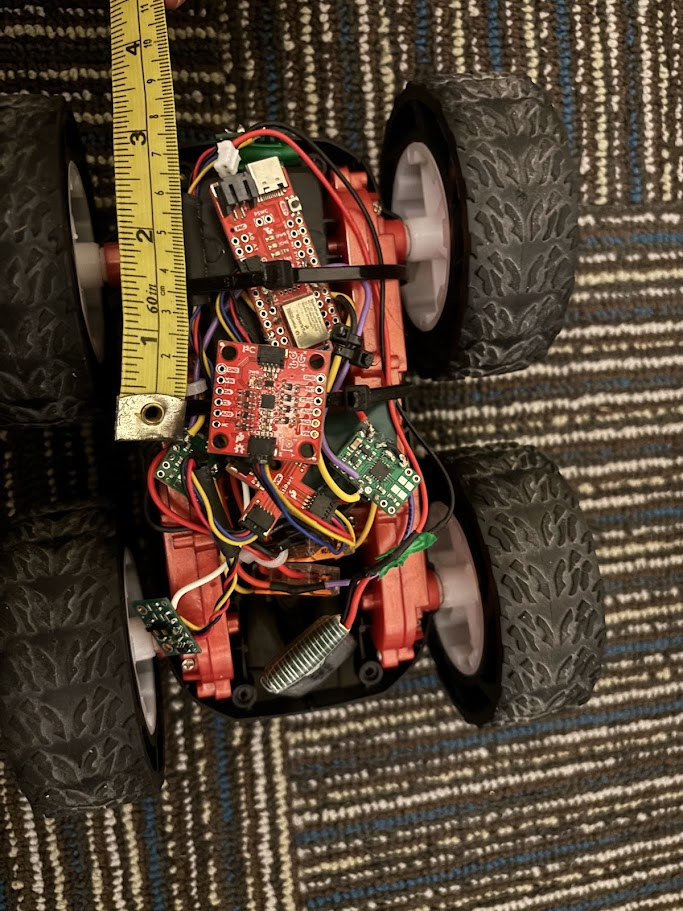
We record the yaw values from our scan. As we can see from the graph, we are able to control the yaw in relatively
consistent angle intervals. Note that because we are ranging our ToF sensor in between turns, we do not poll the DMP
and therefore the yaw values do not always update. We notice that we are consistently able to hit setpoints to a
reasonable degree.
Task 2: Read out Distances
There are multiple marked positions in the lab (-3,-2), (5,3), (0,3) and (-5,-3). We perform our scan in each of these positions with
the following code:
while (scans < 15) {
poll_dmt();
start_time = millis();
while(millis() - start_time < 1000)
{
curr_pwm = PID_Turn(yaw, setpoint);
poll_dmt();
}
diff_drive(0,0);
int dist = 0;
for(int i = 0; i < 3; i++)
{
while(!distanceSensor.checkForDataReady())
{
delay(1);
}
dist += distanceSensor.getDistance();
}
dist /= 3;
yaw_arr[scans] = yaw;
tof_ranges[scans] = dist;
setpoint = (setpoint + 25) % 360;
integral = 0.0; // reset integral term for next pid turn
scans ++;
}
We rotate the robot in 25 degree increments for 14 iterations. For each setpoint, we wait until we
are stationary and take 3 ToF samples and average them to get a less noisy reading.
Because we do not fully hit the setpoint everytime, we return the current yaw of the robot rather than the setpoint when sending back data. This allows
us to account for some of the PID error as we are not fully reliant on hitting the setpoint perfectly. Below shows our
individual polar plots for each position. For each position, we take 14 samples. While these can't show the full map,
they give a good indication of the surrounding features.
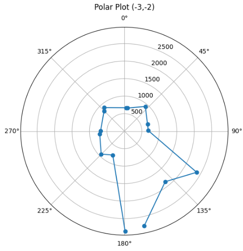
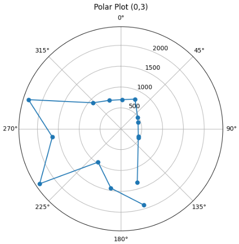
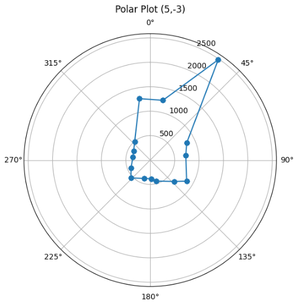
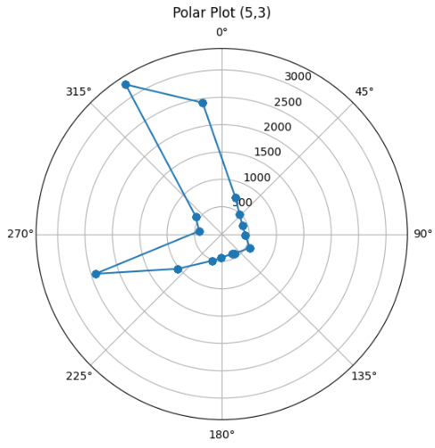
In order to test precision, we can run the robot in a scan twice. This allows us to overlay the two
scans to see how well we can repeat the scan. From the below graph, we can see that we are able to
reasonably repeat the scan within the error range of the ToF sensor. Note that the blue trial has
a point that is significantly closer. This is because there was another robot running trials at the time.
Task 3: Merge Readings
In order to merge the readings, we can take advantage of the homogenous transformation matrix.
We can keep the rotational component as the identity matrix as I made sure to keep the robot facing the same
direction when beginning scans. The translation component is then simply the displacement from the origin.
We can keep the Z component at 0 and vary X and Y depending on the point we are at. Note that I used the 2D transformation
matrix as we are not operating in Z. We know that the
floor tiles marking the points are in feet, so we can convert them to mm to get our translation. We then apply
the transformation to the points in the local maps. The below code
shows our transformation matrix:
# Relative to origin
cx_mm = cx_ft * 304.8 # Convert ft to mm
cy_mm = cy_ft * 304.8
dx = cx_mm - origin_cx_mm
dy = cy_mm - origin_cy_mm
# Translation matrix
T = np.array([
[1, 0, dx],
[0, 1, dy],
[0, 0, 1]
])
# Apply transformation
global_map = T @ local_map
Upon plotting the data, we receive a map that looks like this. Note that I needed to invert the yaw values to treat clockwise as positive
rotation as this was the way DMP was oriented:
Task 4: Convert to Line-Based Map
After looking at my merged map, I notice that the data looks slightly crooked. Upon inspection of my
data, I realized that the zero point I was using was not aligned. To fix this, I simply added a offset to all of the yaw data
netting the below graph.
We can then draw an estimate of the walls and obstacles over our scatter plot. There are definitely some outliers in
the data however many of them are due to other robots in the lab at the time. The outliers that overshoot
are likely due to noise and sensor error.
Discussion
After reviewing my maps, I realized that I should have taken more datapoints per scan. I only took 14 samples
perscan and I believe that this was not enough to get strong estimates of the room, especially when scanning points that
were far away. While this made PID control easier to tune, this also made the data much more spaced than I would have liked.